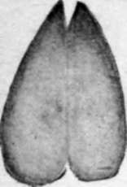
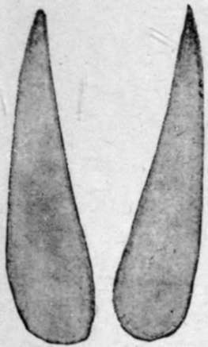

The Risks Of Big-Game Shooting. Part 8
Description
This section is from the book "Wild Life In Central Africa", by Denis D. Lyell. Also available from Amazon: Wild Life in Central Africa.
The Risks Of Big-Game Shooting. Part 8
I tried the beer and rather liked it, as I was very thirsty, but the locusts were too much for me. Then the headman and some of the villagers took me to the hut, which was a flimsy grass affair, the walls as well as the roof being made of grass. I saw two holes in the walls, and I was able to picture the details of the affair. It seemed that the maneater forced its way through one side, and the husband of the woman, instead of standing by with an axe or spear, dived through the opposite side and left his wife behind.
She was a big, fat woman, and the lion had killed her by biting the back of her head. Then it had eaten some of the fleshier parts of her body, having also disembowelled her, and I particularly noticed that the lion had made some deep scratches on the hard mud floor of the hut, and no doubt it tried to scrape a hole wherein to bury the entrails.
It was a disgusting sight, and the smell was overpowering, both of the lion and human being. If natives are frightened they emit a horrible smell, and this carnal odour was more than I could stand for long, and so I departed.
The natives having collected, we first went into a big mealie field where there was a great amount of lion spoor.
Then the tracks led into some thick bush, and here we found some bits of flesh, evidently some that the lion had carried off. I also saw some long mane hair hanging to a thorn bush.
We tried our best to get up to the lion, which we disturbed several times, but never got a glimpse of; although an old man who had mounted an anthill called out something, and began shaking his spear and pointing. I ran to the anthill, but by the time I got to the top the lion had moved on and at last took fright and went off for good, so I never got a shot.
I was inexperienced then, and if I had now the same opportunity, I expect I might have a different tale to tell of that day's proceedings. As I had to get back to Zomba on duty, I had to leave the same afternoon or I would have liked to have sat up for this lion.
Next day the natives burnt down the hut with its gruesome contents, as the lion kept hanging around that night, but was kept off by the flare of large fires and the beating of drums.
Many is the tragedy of this kind that has taken place in all countries where lions still exist, and it still goes on. The natives, of course, are very foolish, as they have abundant materials for making strong huts and inclosures ; but they are too lazy and careless to do so, and they trust to luck, and hope that if anyone suffers it will be someone else and not themselves.
A man-eater does not proclaim his presence by roaring or grunting, and when he is on the look out for a meal he works silently. If he cannot break in through the walls, he has been known to jump on the roof and get through the thatch. I remember hearing in North-Eastern Rhodesia of a lion getting into a hut where there were three boys. He killed them all. Parts of Central Angoniland are bad for man-eaters, and the villages in the vicinity of, and including, Gwirisis, were surrounded by tall palisades to keep the beasts out. The villagers there belong to the Chipeta tribe, a poor, weak lot; and it is noteworthy that lions do not attack the villages of the Angoni tribe to such an extent. In the old days the Angoni hunted them with shield and spear, and I expect the lions have inherited a respect for that tribe.
I remember having a native pointed out to me who, with a large knife, had killed a leopard, which jumped on him.
One day I was passing along a path through the bush and walking quickly when I saw this man ahead of me, with a bundle of sweet potato leaves on his head and an axe in his hand. I thought I would test his nerve, so, having indiarubber shoes on, I walked close up, then sat down behind a big rock close to the path and uttered three or four sharp grunts something like a leopard's. The resemblance must have been pretty close, for at the first grunt he threw down his load and faced round, and approached swinging his axe and giving vent to an occasional yell. It was so amusing that I burst out laughing, and so did this native when he saw that the supposed " leopard" was a white man. He then looked rather disgusted that his leg should have been pulled in this way. However, he smiled again when I told him he had a "strong" heart, and he went off quite pleased with himself.
Natives, I am afraid, think the white men mad, and I have no doubt his story would amuse his friends when he told it round the fires that evening. Many natives are very plucky, and numerous incidents are on record of a native gunbearer or tracker going to his master's aid when in danger from some wild animal.
Again, others reason that it is foolish to run risks, as man has only been given one life, and hold to the old couplet that He who fights and runs away May live to fight another day.
Natives have great faith in certain white men whom they have often seen killing game, but their faith is more in the weapon than the man. Rifles that do not kill much game because they are not held straight are said to be bewitched, whilst others are supposed to have been influenced by a good medicine.
However, they believe that the white man is seldom afraid, although the most experienced of them know the difference between a reckless and reasoning courage.
It is a good thing that Britishers are usually willing to take risks, even when the odds are against them, and it is well that the natives should know this.
Duiker. (One-half size.)
Oribi. (One-half size.)
Reedbuck. (One-third size.)
Puku. (One-third size.)
Impala. (One-third size.)
Bushbuck. (One-third size.)
Situtunga (One-third size.)
Sassaby. (One-quarter size.)
Waterbuck. (One-quarter size.)
(1) spoors of antelopes in miniature. (Note.—Lichtenstein's Hartebeest like Sassaby, but larger.)
Sable. (One-quarter size)
Giraffe. One-quarter size.)
Gnu. (One-quarter size.)
Kudu. (One-quarter size.)
Eland. (One-quarter size.)
Buffalo. (One-quarter size.)
(2) spoors of game in miniature. (Note—Spoor of Roan similar to Sable, but larger.)
Continue to:
- prev: The Risks Of Big-Game Shooting. Part 7
- Table of Contents
- next: Chapter VI. Tracking Game, Licences, And Camp Notes